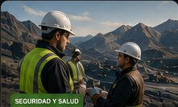

Negociación Colectiva y Estrategia Sindical
Claves para una negociación efectiva, planificación y construcción de acuerdos.
Herramientas, conocimientos y espacios de formación para una representación sindical sólida, moderna y comprometida con los trabajadores.
Claves para una negociación efectiva, planificación y construcción de acuerdos.

SEGURIDAD Y SALUDMarco legal, gestión preventiva y rol del delegado en la protección de la vida.
Análisis de los CCT 36/89, 37/89 y 38/89 y su aplicación práctica.
Herramientas para la conducción, comunicación efectiva y trabajo en equipo.
Formación integral para la actividad metalífera a cielo abierto y subterránea.
12 cursos →Para dirigentes y delegados de canteras, plantas de cal y empresas afines.
8 cursos →Procesamiento, plantas, calidad y representación en la industria minera.
7 cursos →Formación sindical para la industria cementera y sus procesos productivos.
6 cursos →